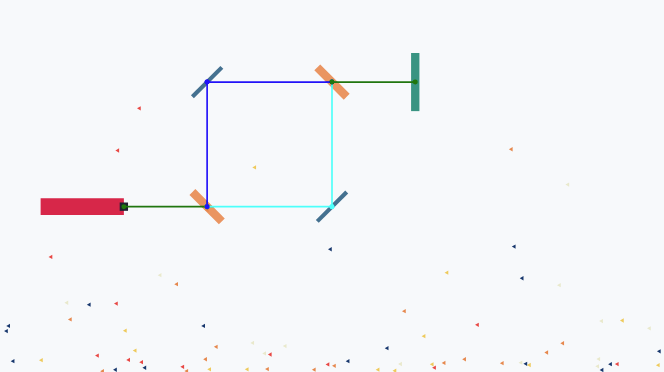

A Grammar of Physics
instaparse, parsing, grammar
As Clojurists, we naturally think in terms of data structures and transformations. Yet we often overlook one of our most powerful tools: the ability to create custom languages through grammars. Today we’ll explore how the amazing Instaparse can be used to define a grammar of physics, and how a custom evaluator can bring that grammar to life as a physics simulation.
The Experiment
Modify the scene and click “evaluate” to see the changes. Try replacing -- connections with %% springs.
What you see above is a rigid body simulation. The scene was generated from a text description using a Domain-Specific Language (DSL) for physics.
The Hypothesis
Look familiar? If you have worked with graph visualization tools like Graphviz, you will recognize the declarative style. But instead of describing visual relationships, we are describing physical ones: bodies, constraints, and composites.
The beauty lies in the syntax: ball -- a creates a rigid connection, a ~~ b forms a rope, and b %% floor adds a spring. Functions like domino let us abstract common patterns. Attributes in brackets fine-tune physical properties like mass and stiffness.
Some affordances for layout are made with the grid function, but a lot more could be done here to automate positioning.
The Theory
Here is my formal grammar of rigid body physics for simulations.
This EBNF (Extended Backus-Naur Form) specification defines our language’s constructs, including bodies with various shapes, constraints, functions, calls, numbers, and symbols.
Try changing the grammar, clicking Instaparse, and see what happens.
The Application
Instaparse takes the grammar and makes a parser. When we parse a program the result is an Abstract Syntax Tree (AST).
Abstract Syntax Tree
The AST is the structure of our physics program. Every concept is organized into a tree that preserves syntax and semantics, as data.
The Equation
The AST is a data representation of our program, not a data representation of the simulation itself. To bring it to life, we need to evaluate the program. The full implementation is in rigid_body.cljs, but for now, let’s examine a small part of it.
:call (let [[fn-name & args] xs
fn-val (or (get-in env [:labels fn-name])
(get core fn-name)
(throw (ex-info (str "Function not found: " fn-name)
{:id ::function-not-found
:fn-name fn-name
:env env})))
[env arg-vals] (eval-vector env args)
[fn-env result] (apply fn-val env arg-vals)
env (merge env (select-keys fn-env (vals entity-plural)))]
[env result])This is the rule for handling :call nodes in the AST. The body of the call node contains a function name and arguments. We look up the function in the environment. Arguments are evaluated, the function is applied, and the environment modified.
Our evaluator walks the AST, interprets each node according to our physics semantics, and adds bodies, constraints, and composites into an environment. That environment is then traversed to hydrate a Matter.js rigid body simulation.
What I love most about the evaluator and hydration is that all the tedious Matter.World.add(Matter.Bodies.create(...)) nonsense disappears. When all you have is a code API, boilerplate clutters up your simulation to the point that it becomes difficult to reason about. The textual descriptions, in contrast, only describe the domain.
Here we start to see how programs beat data representations; compression through implication. Our statement domino: (x, y => rectangle x y 10 50) labels a function that implies object creation. When we write ball -- a, it implies lookup by label and constraint creation. Programs let us work at the level of intent.
An alternative solution is to create a “world builder” that writes the simulation as data. Indeed, there is fertile middle ground here. Our program produces a data representation from the AST before hydrating the world, so this approach can work in conjunction with a world builder. The grammar feels more powerful and compositional for initial creation, whereas a world builder excels at making adjustments in a more tactile way.
Breaking the Laws of Compilation
This Instaparse demo runs in your browser, but rigid_body.cljs has not been compiled to JavaScript. Isn’t that impossible? Libraries like Instaparse require compilation!
Scittle brings the Small Clojure Interpreter (SCI) to the browser as a script. Scittle interprets ClojureScript without compilation. Scittle Kitchen is a collection of pre-prepared ClojureScript libraries as scittle plugins, including Instaparse. Currently, there are 15 unofficial plugins, including asami, clara-rules, emmy, and geom.
The Laboratory
I include the plugins and rigid_body.cljs in this page as scripts:
(kind/hiccup
[:div
[:script {:src "https://cdnjs.cloudflare.com/ajax/libs/matter-js/0.20.0/matter.min.js"}]
[:script {:src "https://cdn.jsdelivr.net/npm/scittle-kitchen/dist/dev/scittle.js"}]
[:script {:src "https://cdn.jsdelivr.net/npm/scittle-kitchen/dist/dev/scittle.pprint.js"}]
[:script {:src "https://cdn.jsdelivr.net/npm/scittle-kitchen/dist/dev/scittle.instaparse.js"}]
[:script {:src "https://cdn.jsdelivr.net/npm/scittle-kitchen/dist/dev/scittle.cljs-devtools.js"}]
[:script {:type "application/x-scittle"
:src "rigid_body.cljs"}]])This loads Matter.js for the physics simulation, Scittle for ClojureScript evaluation, the Instaparse plugin, development tools, and our custom evaluator.
When I save this namespace, Clay reloads the page for me. When I save rigid_body.cljs, Clay hot-loads just the code for me. This is a convenient way to mess around with an idea, and produce a working artifact that I can share with people.
The Universe of Possibilities
The Grammar of Graphics influenced data visualization by providing a systematic way to describe visual mappings. Libraries like ggplot2 and Vega became powerful precisely because they gave users a language to express their intent. Can we apply this same principle in physics?
In the lab, we build setups to explore principles, test boundaries, and learn by doing. By constructing a grammar and evaluator, we create a playground for ideas.
A well-thought-out set of grammars for physical simulation setup would enable modeling and experimentation. Consider how experimental physics setups are naturally described as connected components: laser -> mirror -> beam-splitter -> detector could define an interferometer setup. The value is in being able to quickly and precisely describe an experiment, making it easy to communicate, share, and reproduce. Imagine chemical reaction networks where H2 + O2 => H2O [catalyst=Pt, temp=400K] defines stoichiometry and conditions, or ecosystem models where grass -> rabbit -> fox creates food webs with population dynamics.
It’s possible to build up libraries of functional compositions of the components in such a grammar. With these you could quickly prototype setups by combining and adjusting. This would make it easier to share experimental designs as text, or generate documentation and visualizations.
The Result
The intersection of grammars and physics is worth exploring. Tools like Scittle, Scittle Kitchen, and Clay make it fun to try ideas with minimal setup, from the comfort of my favorite editor.
We explored three ideas:
1. Grammar: By creating a grammar tailored to physics simulation, we make concepts accessible through syntax, and a means of combination.
2. Interpretation: Our evaluator transforms the parsed AST into physics simulations, applies functions, and makes Matter.js API calls.
3. Uncompiled: Instaparse enables redefinition of the grammar on the fly, and Scittle-kitchen allows me to use it without compilation.
Scittle Kitchen plugins include many other interesting ClojureScript libraries. If grammars aren’t your cup of tea, I’m sure you’ll find something else of interest.
Until next time, keep parsing the possibilities.
